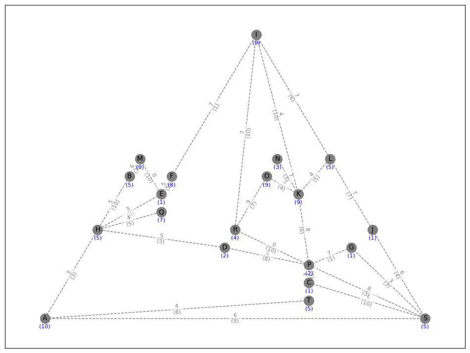
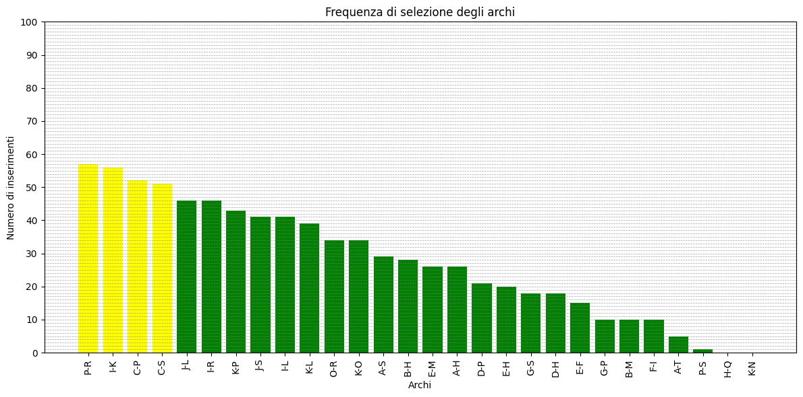

📌 Project Overview
The project addresses a Network Design problem in urban planning. The goal is to design a connected bicycle network that maximizes total attractiveness (Likeness) for citizens, while respecting a strict budget constraint. The problem was modeled as a graph optimization problem, solved through the implementation of several advanced heuristics and meta-heuristics.
⚙️ Methodology & Algorithms
Four approaches were implemented and compared:
- Greedy Algorithm: A constructive technique selecting edges with the best attractiveness/cost ratio.
- Local Search: An improvement algorithm seeking local optima in the neighborhood of the initial solution.
- G.R.A.S.P.: Introduces a stochastic component to escape local optima.
- LNS (Large Neighborhood Search): The most advanced approach based on the Destroy & Repair strategy.
📊 Visual Analysis & Results
Problem Instance (Input)
Caption: Input undirected graph representing potential connections.
Greedy Approach

Likeness: 129
LNS (Presumed Global Optimum)

Likeness: 154
Network Robustness (Frequency Analysis)
Caption: Edges with 100% frequency represent the fundamental "backbones" of the network.
🛠️ Tech Stack
🔒 Code Note: To comply with academic policies, the source code and instances are kept in a private repository.